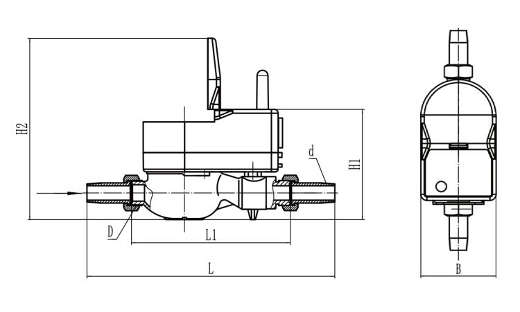

E-mail:
info@sh-meters.comCall Us:
+86 13131984716The current urban water management faces many problems, such as population growth, water security, and climate change. In order to build a safer and more sustainable future, the concept of a smart water city is the best public policy and technology in the last century. The best alternative is to digitize the city’s water and transform it into a smart water city, which is a complicated process.
So, what exactly is a smart water city and how can it be realized?

1. Master safe and real data analysis
Information must be collected about how the facility operates and the results of any work performed on the infrastructure. In our industry, this requires a water measuring instrument that records and stores data-a smart water meter, which stores water usage data for at least six months to one year for analysis and management
2. Remote management
Intelligent water management is bound to change the traditional model. Some water companies have begun to try remote management, which is a way to reduce labor costs and facilitate customers. With the advancement of science and technology, this method will inevitably be popularized and widely used.